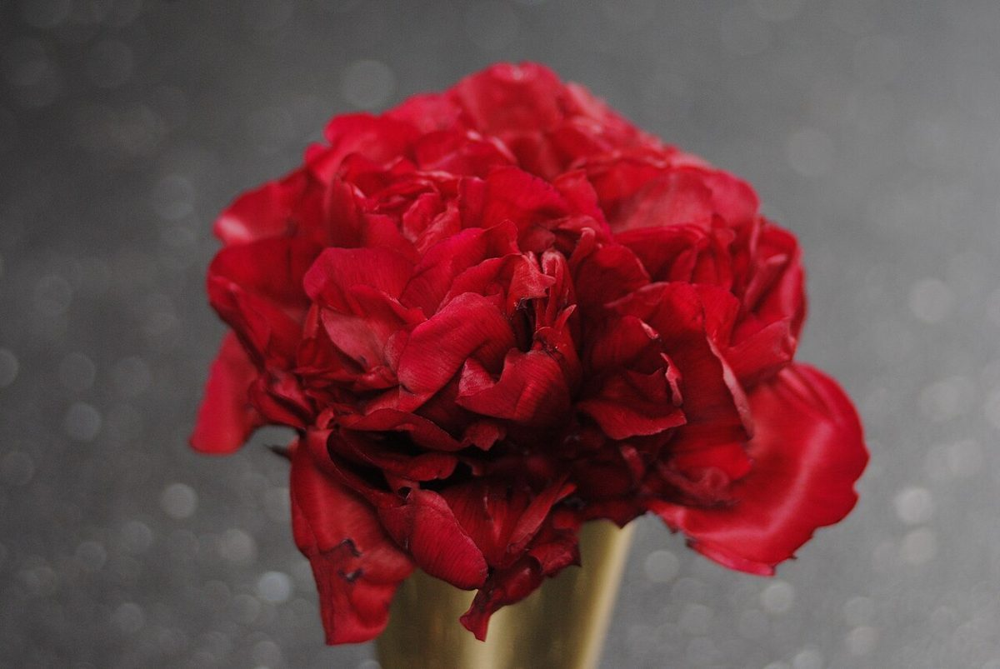

04
ひとつ目 / 緑
ふたつ目 / 赤

緑の葉と赤い花。色だけ反対にしました。
店のこと
確認できているのは、所在地とInstagramのアカウントだけです。
屋号の意味・由来、お店の雰囲気や提供内容は分かっていません。下の写真と文は制作側の連想によるイメージで、お店の実際の様子ではありません。
想像してみる
同じ語が二度続く屋号を見て、制作側は「一度目より二度目のほうが、少しやわらかく聞こえる」ような感覚を思い浮かべました。そこで、緑と赤、粒と面のように、近いようで違う二枚を並べています。
ひとつ目 / 緑
ふたつ目 / 赤

緑の葉と赤い花。色だけ反対にしました。
ひとつ目 / 粒の集まり

ふたつ目 / 一枚の面

細かいものと、広い面。